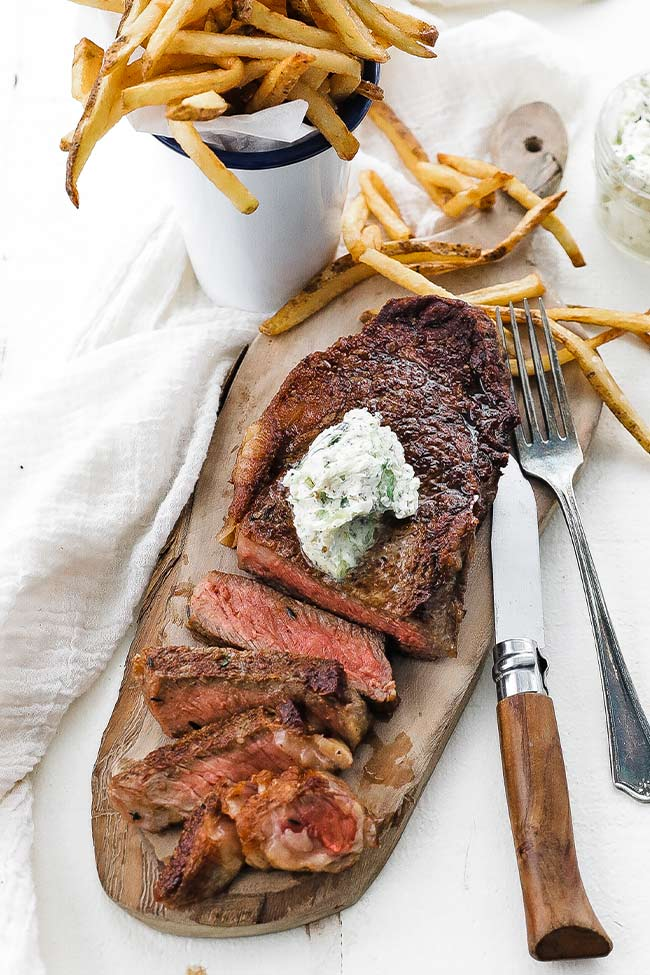

Index.
Steak Frites

Learn how to make this Classic French Steak frites recipe that is served with homemade lemon-herb butter.
This has become one of my all-time favorite steak dishes.
Ingredients
- Butter
- Top Sirloin
- Avocado Oil
- Rosemary
- Garlic
- Potatoes
Steps
- Start by making your herb butter
- Cut the russet potatoes to your desired size and fry them.
- Season the steak and add thyme, garlic, and butter, and cook for 3 minutes per side while basting the steak.
- Add butter to the top of the steak, slice, and serve with fries